Reviving the Twenty-Four Views of Yuntai
Key frames and transition films converting historical line art into photoreal scenes for Lianyungang Museum.
Design Portfolio
Scroll to turn the page
Or use the navigation above
Right-click any text to view the Chinese original
Tap the image to view
Professional Capabilities
Proficient in Photoshop, Procreate, CapCut, Jimeng, Ranmeng Valley, and Cursor. Skilled in end-to-end brand design, TVC scriptwriting, finished-film production, folk-culture research, and pixel-game prototyping. I draw by hand, keep a human hold on narrative logic and cultural accuracy, and I know how to fix the symbol distortion and logic slips that AI generation tends to produce.
Creative Philosophy
My work leans toward emotional storytelling and local culture. I believe tools should serve what a person has to say. Off the clock I make clay sculpture, which feeds how I think about form and story. I hold CET-4 and read English comfortably. I want to bring an animator’s sense of narrative to AIGC advertising.
Tools & Software
 CapCut
CapCut
 Procreate
Procreate
 Photoshop
Photoshop
 Figma
Figma
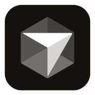
CursorAI speeds the work; human thinking holds the creative core.
Project type: Independent full-brand campaign. Timeline: 2 weeks
Tools: Jimeng, Photoshop, CapCut, Procreate, Cursor
My role: I completed the brand research, marketing strategy, hand-drawn logo, packaging, TVC script and finished cut, and campaign assets across platforms. AI supplied visual drafts only; I revised, redrew, and tuned the tone of every finished piece.
Swipe left to change images
A quiet visual journey from work fatigue to calm relaxation.
Most teas sell a lift. That is just spending energy you do not have. Marketing leans on function and skips feeling.
The bind: get off the crowded tea track. For people under office pressure, turn an abstract sense of ease into a brand you can see and feel.
Zensit is a calming tea for mood — not a louder claim about what the drink does. It is for people who live on screens and stay wound tight. A quiet visual system gives tired people a place to let go.
Bitter-orange blossom, water, and a sense of ease become the pack — so the tea is not only a drink, but a quiet companion.


• Instagram: I designed four exclusive posters for Instagram overseas. I stepped away from the domestic, lived-in seeding style and used a spare composition, wide white space, and a low-saturation, soft palette. Extra decoration came out. A quiet, unhurried rhythm carries the brand’s calming tone — closer to the simple, high-end look overseas platforms prefer, and a distinct set of brand visuals for that audience.
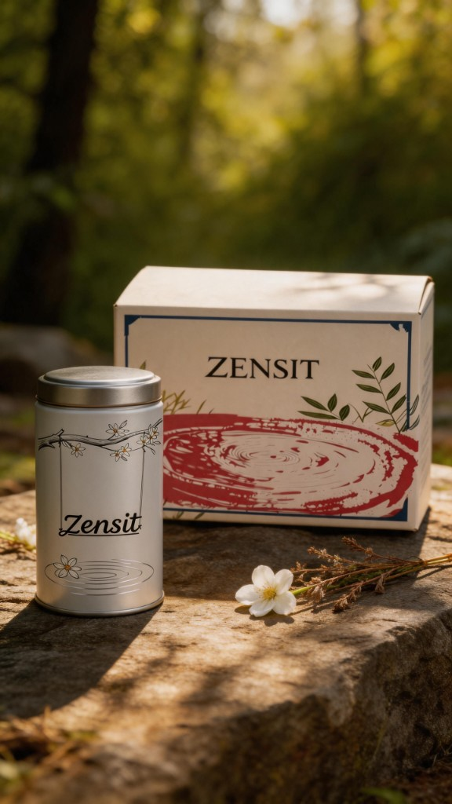
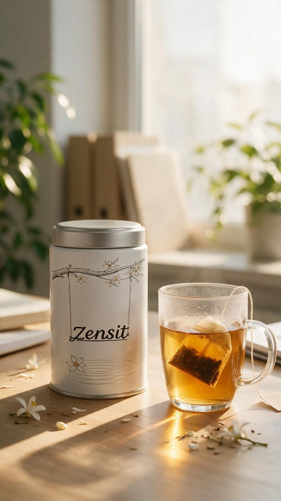
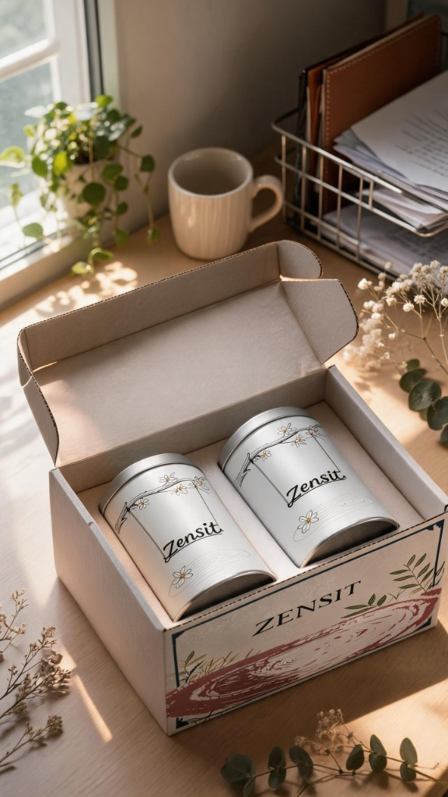
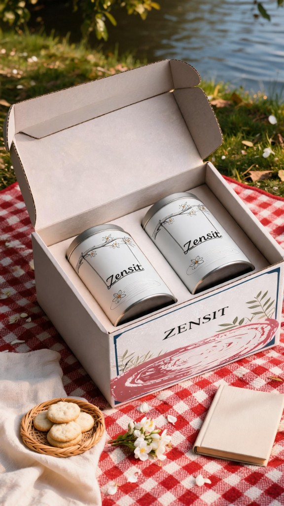
I made a set of atmospheric posters built around office fatigue and the moment of zoning out. Soft light and plants carry the sense of rest. They are built for social, and they carry the brand line: slow down, and put your feelings down.
I set a single visual system: a low-saturation Morandi palette, a limited type set, and a floral motif. Posters, packaging, and the film all come from that system, so the work holds together across platforms.
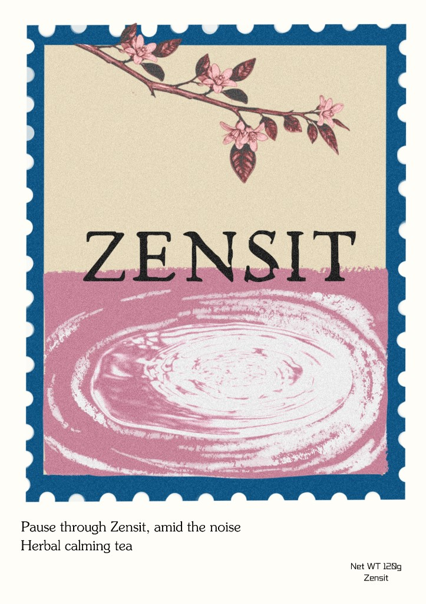
• The poster stays with the project’s vintage stencil-print look and uses stamp perforations as the frame. Bitter-orange blossom at the top is both the tea’s key ingredient and the brand’s symbol of ease; the ripples below make visible the feeling of settling after a sip. The line is about a short pause in a noisy day.
• Color is mixed to the brand spec, and the print grain stays consistent so the poster, packaging, and film feel like one set.
• I did not want a cup sitting on a table. I wanted to get past the usual tea poster and show what the drink does for how you feel.
• I made bitter-orange blossom the through-line, turned an invisible calm into ripples, and used the stamp frame to give that pause a little ceremony. After a lot of color tests, the piece moved from a cup of herbal tea to a place to rest your head.
Working from Zensit’s core — ease, quiet, repair — I ran several rounds of sketches. A heavy wordmark became lighter, stroke by stroke, with the bitter-orange blossom as a mark. I kept adjusting weight and scale until the lockup felt soft, light, and clean: the calming register of the brand.
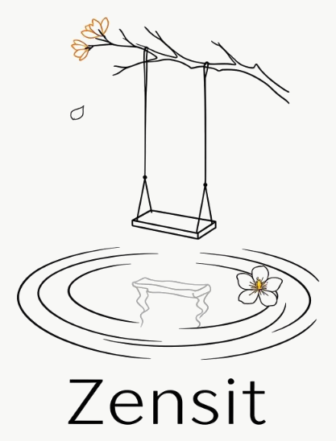
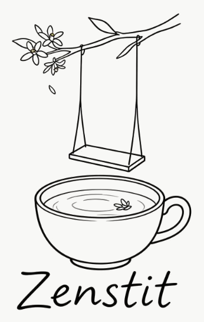
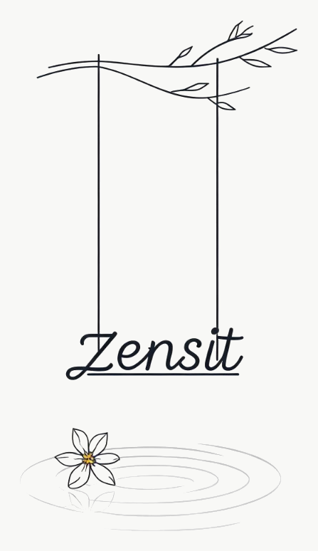
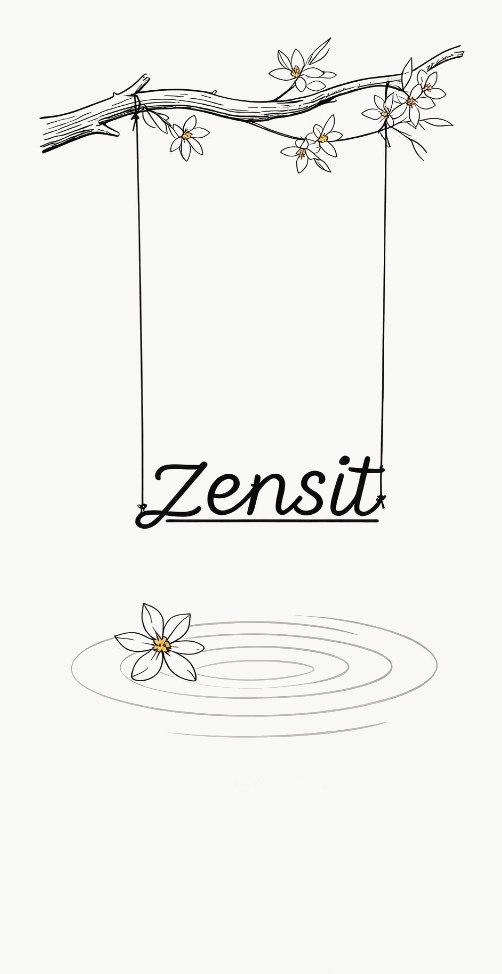
• Challenge 1: AI looks drifted; a single unhurried brand look was hard to hold
• Fix: AI stayed a draft. I never reused it as a finish. I redrew and recast color still by still, locked a low-saturation Morandi palette, and judged the mood of every frame so the campaign would read as one.
Figs. 1 and 3 look appealing, but the forms easily drift and break continuity. Strengthening light and shadow, and gently reinforcing the outer contour, locked the shapes in place — and the sequence began to read smoothly.


• Challenge 2: The TVC turn from tired to ease was hard to make visible, and the story went stiff
• Fix: I broke the emotion into beats, refined the boards, then tuned the character’s state, shot length, and music. Several cuts later, the arc felt smooth.
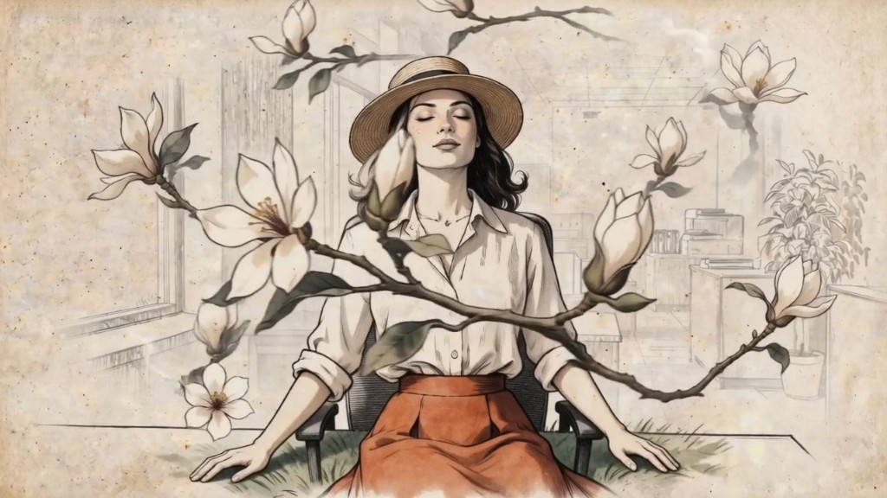
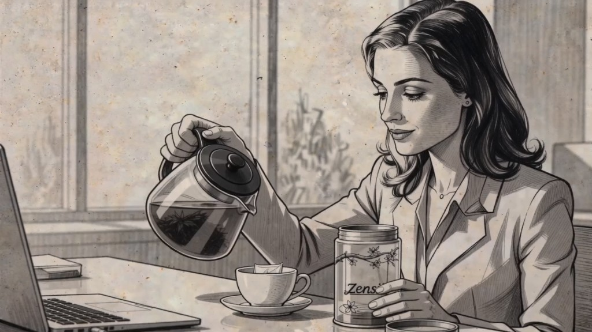
I locked color, mark, and type first, then adapted layout to each platform — one core, a form that fits the medium.
AI can draft ideas fast. It cannot hold a whole brand’s tone on its own — that still takes a person. For work across platforms, lock the visual system first, then adapt, or the brand splits.
Welcome colliding views; better work is honed in disagreement.
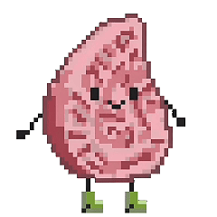
• Project type: A collaborative pixel-game prototype. Timeline: 2 weeks
• Tools: Jimeng, Photoshop, Procreate, Cursor
• My role: I did the folklore research and game design myself, and drew the full set of characters, props, and scenes. Cursor drafted the first pass of the code; I debugged it and shipped a playable interactive demo.
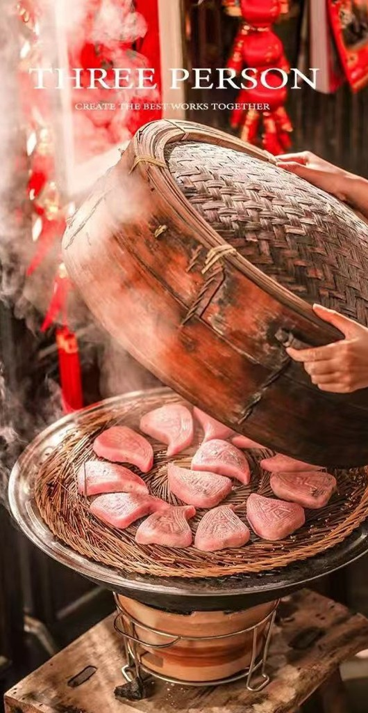
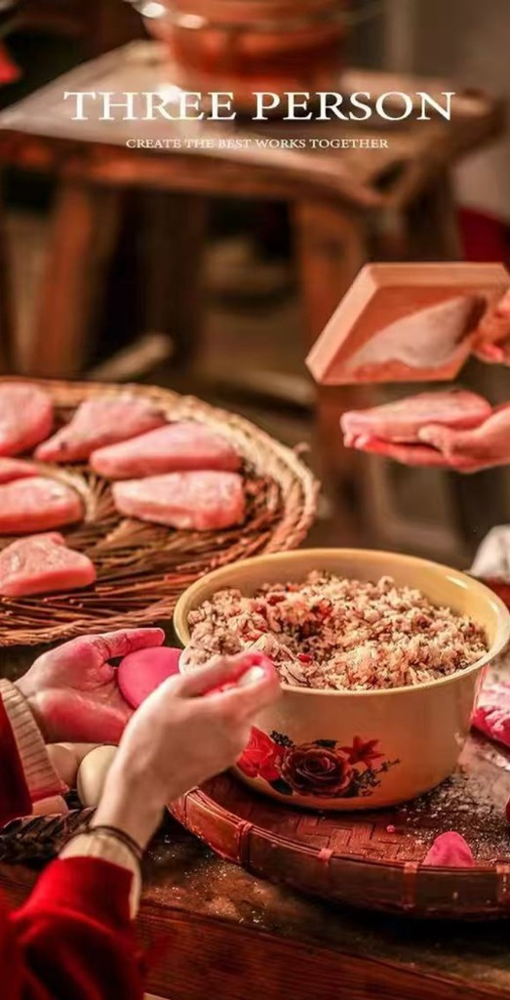
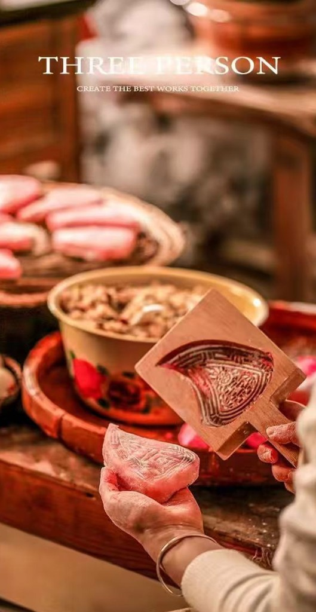
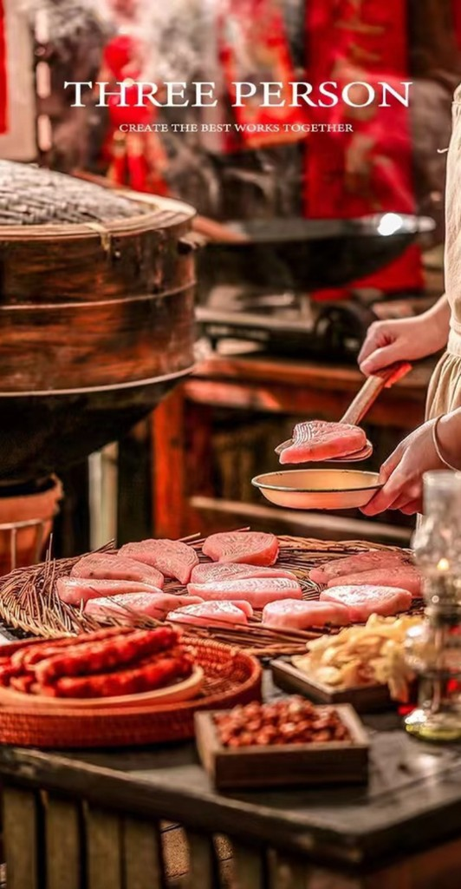
Folk-education content is hard for most people to get into. This project puts Teochew red peach kueh inside a pixel runner, so a local foodway can reach younger audiences through play. Collecting, dodging, and a folk quiz are all in.
• Key Problem: AI map logic was a mess — clipping and bad pathing
• AI tilemaps could not tell walkable floor from blocked space. The character drifted, walked through walls, and snagged on geometry.
• Fix: I built a three-color markup layer in Photoshop to mark floor, counter, and sink as walkable zones, then bound the pathing to those zones. Once it checked out I deleted the markup and finished the map by hand, which killed the pathing bugs.


• A full original pixel-art set: both character IPs — Taotao (red peach kueh) and A-Ke (shu-ke kueh) — plus collectibles, hazards, scenes, and level UI.
• A complete playable demo online: runner logic, the Teochew folk quiz, deployed to the web so you can play it in a browser.
• Later work, still concept-only: a qilou-themed stage, a folklore encyclopedia, and merch. No visuals for these yet.


• Niche regional culture does not come out of AI cleanly. It takes human research and checking to catch cultural slips. AI code was a sketch; making it work still took me.
• A runner can get people interested. It cannot stand in for deeper education.
• A casual runner can only carry so much. An encyclopedia and new stages could go further. This is a personal prototype, not a live product, and the play still has room to grow.
Do not take a finished piece as given; redraw until the visual tone holds.
Key frames and transition films converting historical line art into photoreal scenes for Lianyungang Museum.

AIGC key frames and a finished film that uses a factory setting to carry the brand’s manufacturing story.

An original character and short animation—“I Want to Clock Out!”—built around a young, workday mood.

Classical-style AIGC animation key frames and a full edit supporting the contest launch.
Line art to photoreal


Fig. Main AIGC revival film of the museum’s paintings · Click to play · Lianyungang Museum collaboration
Project: Reviving the Twenty-Four Views of Yuntai
Client: Lianyungang Museum
Role: I produced the key frames that turn historical line art into photoreal scenes, and built the transition films between them.
Challenge & solution: Line-to-photoreal conversion left hard, lifeless edges. I rewrote the photoreal prompts so the images generated as complete scenes, without the stiff outlines.
Outcome: All twenty-four classical views were restored in a style consistent with the historical atmosphere. The key frames and transitions went into the gallery’s multimedia display and improved the visitor experience. The client was pleased with the result.


Printer factory studies
Fig. Pantum product film · Click to play · Key frames and boards
Project: Pantum Printer Promotional Film
Client: Pantum
Role: I used AIGC to produce the key frames and the finished promotional film.
Challenge & solution: The printer’s internal parts are dense; generated frames kept distorting. I shifted the concept to a factory setting that still carried the product story, and avoided the detail bugs.
Outcome: A visually consistent short that lays out the manufacturing idea, delivered for online promotion and meeting the intended campaign effect.


Otter expression studies
Fig. Commercial IP “I Want to Clock Out!” introduction film · Click to play · Character and animation
Project: Commercial IP Design — “I Want to Clock Out!”
Client: Commercial brand
Role: I designed the IP, storyboarded, drew the key frames, and produced the finished short animation.
Challenge & solution: I had to establish the character and land an emotional beat in a very short runtime. I stripped the narrative down, pushed expression and motion, and cut to a rhythm that leaned into the office-worker mood so the piece would stick.
Outcome: A complete IP introduction with a consistent, recognizable look, ready for social and youth-facing brand work, and with room to extend commercially.


Fig. SPDB Zhuoxin National Photography Contest — “Start of Spring” launch film · Click to play
Project: SPDB Zhuoxin National Photography Contest — Start of Spring Launch
Client: Shanghai Pudong Development Bank (SPDB)
Role: I used AIGC to produce key frames for classical-style animation sequences, completed the animation, and oversaw the full edit.
Challenge & solution: Period scenes often came back with visual artifacts, and cuts between scenes felt abrupt. I tightened the prompts, built scenes from matching reference, and used same-color transitions to smooth the joins.
Outcome: The launch film ran on Douyin and reached 1,700 views, widening exposure for the contest and meeting the brand brief.
Hold the romance of an idea, and the result that can actually land.

ATIÏSSU
Portrait study — color blocking with line.

Figure Study
Monochrome value — structure and surface.

Classical Light
Thick-paint portrait — oil-paint texture in digital.

Character Portrait
Film-character study — light and expression.

Cigu · full character stand
From the character sheet
Name: Cigu
Birthday: the nineteenth day of the ninth lunar month (Guanyin’s birthday)
Age: unknown
Likes: Nothing in particular. She has lived in the temple for as long as she can remember, and her tastes are as quiet as the place. A small, stubborn habit: she is not required at morning assembly, but she likes watching the temple fill from silence, so she gets up early just to look at people. When the last monk arrives, she goes back to sleep.
Weapon: A small flower lantern. No one has ever given her a weapon. If something has to count, the Buddha-light around her keeps harm at a distance.
When did Cigu first become aware? No one knows. No one pays attention to a lantern on an altar, even one that has begun to breathe like a person. From the moment she woke, she has lived in the temple, with the abbot’s chant always somewhere in the air. She has never left, so her mind is still clear and young—but a strange, considerable power moves with her. It keeps her safe. It also keeps everyone else away. Will she stay this alone?
Character: Cigu—born on the nineteenth of the ninth lunar month (Guanyin’s birthday). Quiet, watchful, often among flowers and old temple rooms, with a little of the unworldly about her.
Color: An emerald bodice and a vermilion skirt, picked out with gold pattern and jewels, so she holds warmth against the dark of the shrine.
Temperament: Still on the surface, finely tuned underneath. She prefers her own company and flowers, and feels at home in temples and old rooms.
Origin: Folk custom and myth, painted in digital thick paint. The file on the left and the story on the right make one complete IP sheet.

Costume notes
If we can, please talk with me in person.